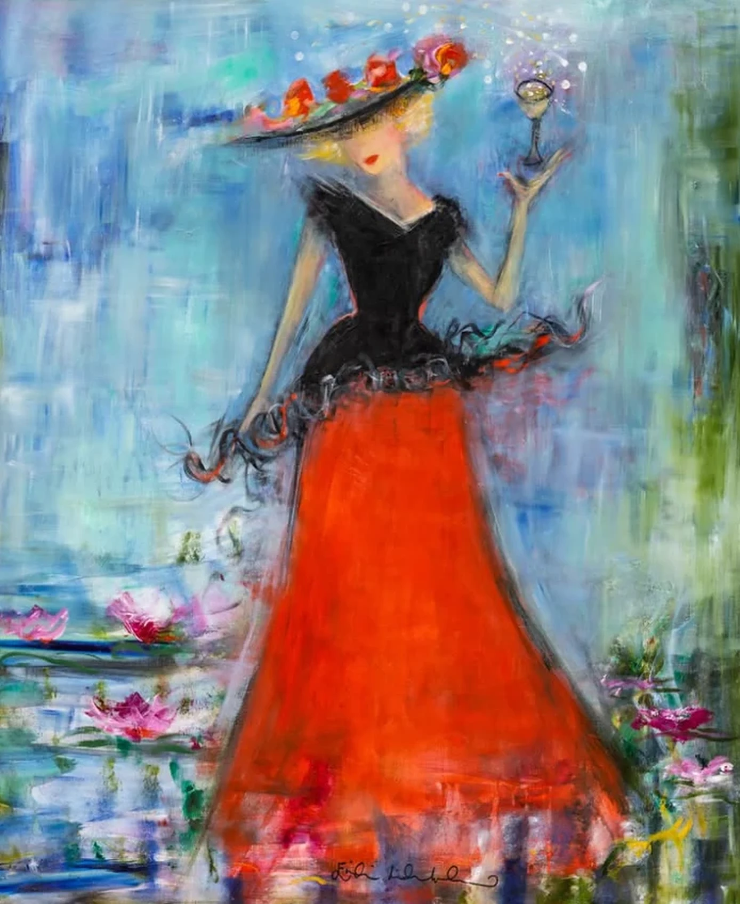
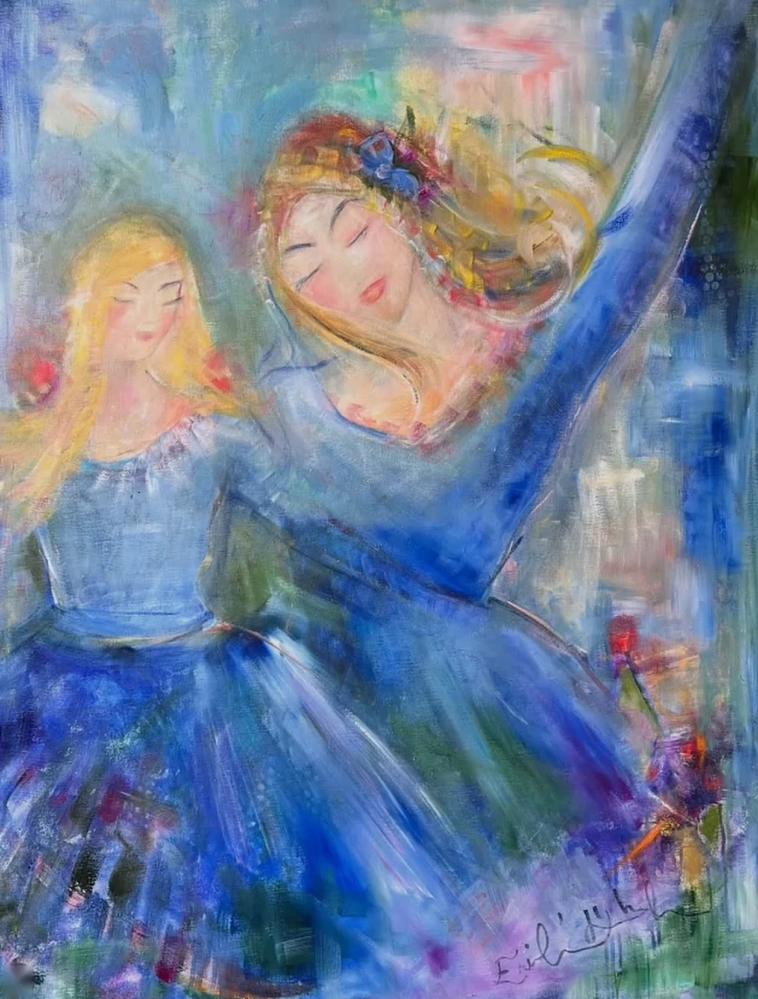
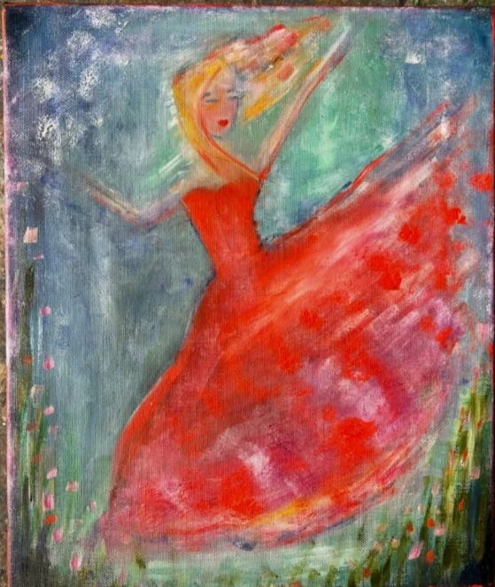

10–20 personer
10–20 personerUpplevelser och kurser
Måla tillsammans, gå en heldagskurs eller kom med bussen. Måleri och mat i samma dag.
Se upplevelsernaI en varsamt renoverad lada från början av 1900-talet har konstnären Emilia Linderholm sin ateljé och sitt galleri. Runt omkring växer Jonas Danielssons trädgård, och i matstudionen lagar han mat med doft av Medelhavet. Här möter Småland Provence, bara 20 minuter från Växjö.
 10–20 personer
10–20 personerMåla tillsammans, gå en heldagskurs eller kom med bussen. Måleri och mat i samma dag.
Se upplevelserna
Olja på linneduk · glasFärgstarka kvinnogestalter som vill väcka känslor. Boka en visning i ateljén.
Möt konsten Fransk och sydeuropeisk
Fransk och sydeuropeiskGenerös, lustfylld och vällagad mat, med grönsaker från den egna trädgården.
Till matstudionKom förbi galleriet och trädgården i adventstid. Emilia ställer också ut separat hos Tranåsbygdens konstförening 13–29 november. Följ @konstladan_i_tolg_ på Instagram för tider.


”Det här är det perfekta besöksmålet på en kulturresa.”
Linnéa Sallay, guide för ReseSkaparna
”Vi var lyriska! Tack också till Jonas för den goda maten.”
Maria, SPF Habo
Vi skräddarsyr dagen efter er grupp. Ni målar i ateljén, äter Jonas mat och strövar i trädgården. Ingen förkunskap behövs, bara lust.
Lev ut konstnärsdrömmarna i ateljén. Alla målar i akryl på canvas utifrån samma motiv, och Emilia guidar steg för steg. Det handlar om glädje, inte prestation. Perfekt för kompisgänget, 50-årsfesten, företagseventet eller den mindre konferensen.
WiFi och utrustning för en mindre konferens finns på plats.
Boka måla och skåla
Lämna vardagen för en hel dag i färgens tecken. Vi arbetar i akryl på duk och i akvarell, med enkla och tydliga uppgifter. Kursen passar både dig som vill testa och dig som vill vidare i ditt eget uttryck. Nya datum släpps snart.
Betalas mot faktura två veckor före kursstart. Ange allergier när du anmäler dig.
Anmäl intresseFika eller medelhavsbuffé, Emilias föreläsning med sång och berättelser, tid i galleriet och en promenad i trädgården där Jonas berättar om växterna. Vi hjälper gärna till med lunch, sevärdheter och övernattning i närheten.
Boka bussbesökFör dig som målat ett tag och vill hitta din egen kärna. Fem träffar under en termin, 2,5 timmar en gång i månaden, i ateljén eller online. Terminen avslutas med ditt eget vernissage.
Ställ dig i kö”Tusen tack för din fina föreställning med vacker sång och härliga berättelser, och varmt tack till Jonas som lagade den godaste maten jag ätit på hela resan.”
Linnéa Sallay, ReseSkaparna
Svepande klänningar, en blick som dröjer sig kvar, en sen sommarkväll med vänner. Emilia målar färgstarka kvinnogestalter i olja på linneduk, formger glas och sjunger. Musiken går som en tråd genom allt hon skapar.






Att köpa konst av en verksam konstnär gör att hon kan fortsätta skapa, och ger mer färg och harmoni hemma. Boka en privat visning i ateljén och galleriet.
Boka visningEn doft av Medelhavet mitt i det småländska landskapet. Maten ska vara generös, lustfylld och vällagad, med inspiration från det franska och sydeuropeiska köket.
Matstudion på gården har ett komplett restaurangkök. Här lagas lunch och middag till grupper, och på sommaren står crêpes, galetter och croissanter på krittavlan.
Desserter som gör sig redo för gästerna.
Grillad croissant med sallad och balsamico.
Långa sommardagar vid borden på grusgården.
Utkast avläst från krittavlan. Jonas kontrollerar rätter och priser innan sidan publiceras.
Prunkande rabatter, ätbara grödor och mest återbrukade växter. Det Jonas odlar hamnar så småningom på tallriken.
Jonas kommer från Braås och turnerade med några av Sveriges största artister. Tillbaka i Småland utbildade han sig till kock. Skapandet har varit den röda tråden hela vägen.
Välj vad ni vill göra, berätta lite om gruppen så återkommer vi med förslag och pris.
Det här är en skiss, så förfrågan skickas inte någonstans. På den riktiga sidan går den direkt till Emilia och Jonas.
Upplevelser och konst: Emilia, 070-144 60 31, emilia@linderholm.se
Mat: Jonas, 070-668 98 76, jonas.danielsson1@gmail.com